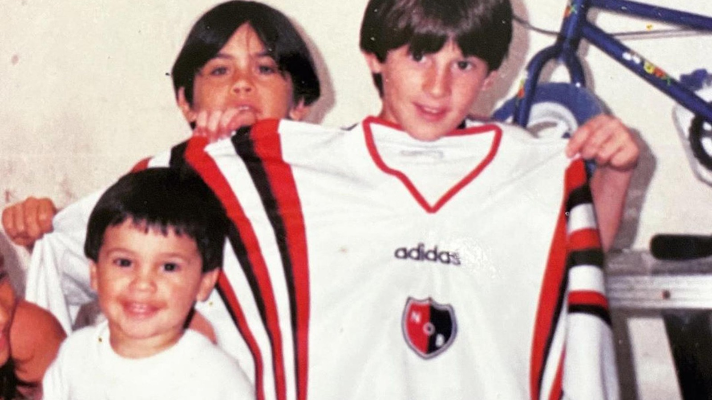

×
Historias de Gloria: El Inicio de Lionel Messi

Mucho antes de levantar la Copa del Mundo y poseer ocho Balones de Oro, **Lionel Andrés Messi** era solo un niño menudo que corría con un balón pegado al pie en las calles de Rosario, Argentina. A los cuatro años, su abuela Celia lo llevó por primera vez a un club de barrio, intuyendo el talento descomunal que el mundo entero tardaría un poco más en descubrir.
Sin embargo, el camino hacia el estrellato estuvo lleno de obstáculos. A los 10 años, fue diagnosticado con una deficiencia en la hormona del crecimiento. El tratamiento médico era sumamente costoso para su familia y los clubes locales se negaron a financiarlo. Fue en ese momento crítico cuando el **F.C. Barcelona** apareció en el mapa: tras una mítica prueba donde deslumbró a los visores, el club catalán firmó su primer contrato en una servilleta de papel y se comprometió a costear su tratamiento.
Aquel niño que cruzó el Atlántico con una maleta llena de dudas y problemas físicos se convirtió, a base de disciplina, resiliencia y una magia innata, en el futbolista más grande de todos los tiempos. Su desarrollo en la masía y su posterior debut a los 17 años cambiaron la historia del balompié para siempre, demostrando que ninguna limitación física es más grande que el tamaño de un sueño.
"Cuando veías a Leo, parecía que el balón era una extensión de su cuerpo. Era imposible quitárselo sin hacerle falta". — Relato de sus entrenadores en las divisiones inferiores.